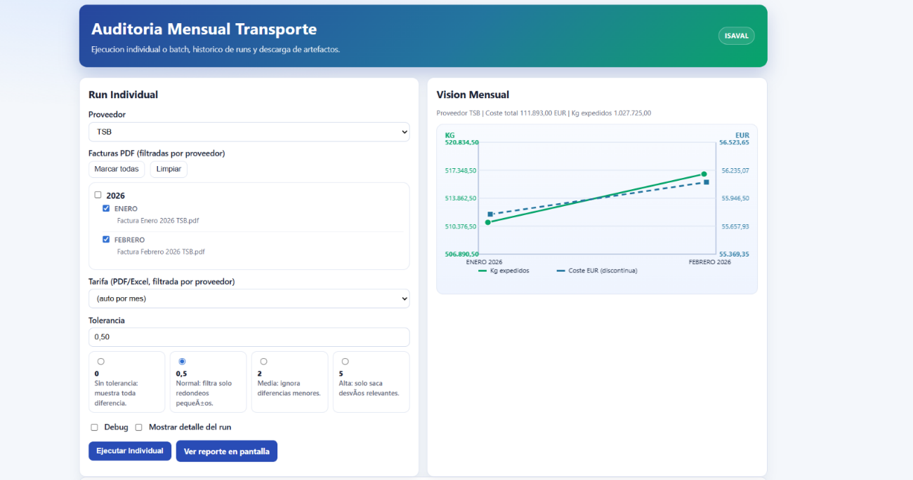

En muchas empresas, las facturas de transporte contienen toda la información necesaria para poder revisar bien los costes, pero esa información no siempre está en una forma que facilite una validación rápida, homogénea y útil para la gestión. Las facturas llegan, se contabilizan, se pagan y, muchas veces, solo se revisan en detalle cuando aparece una desviación evidente o una incidencia concreta. El problema es que entre tener las facturas y tener un criterio claro de control hay bastante distancia. Justo ahí es donde se enfoca este proyecto: en convertir la revisión de facturas de transporte en un proceso más estructurado, más ágil y más útil para detectar discrepancias reales.
La necesidad surgió de algo muy práctico. Revisar una factura de transporte no es solo mirar importes, sino contrastarlos con una lógica tarifaria concreta: expediciones, destinos, pesos, recargos, condiciones pactadas y otras particularidades que pueden cambiar el resultado final. Sobre el papel, toda esa información existe. En la práctica, comprobarla manualmente exige tiempo, atención y bastante conocimiento de cómo debe aplicarse cada tarifa. Cuando el volumen crece, el proceso deja de escalar bien y aumenta la posibilidad de que pequeñas desviaciones pasen desapercibidas.
A partir de esa necesidad, el enfoque del proyecto ha sido doble. Por un lado, se ha tenido que estructurar bien la información para poder comparar lo facturado con lo que realmente debería aplicarse. Por otro, se ha intentado trasladar la complejidad de las tarifas a una herramienta de revisión que sea útil de verdad para el negocio. La idea no era solo saber si una factura parece correcta, sino detectar dónde hay diferencias, qué casos merecen revisión y en qué puntos conviene entrar más al detalle. La herramienta se ha planteado precisamente con esa lógica: reducir trabajo mecánico, ganar capacidad de análisis y hacer más consistente la revisión.
Ahora la persona que revisa puede apoyarse en una comparación más directa entre la factura y la tarifa esperada, identificar con más rapidez las discrepancias y centrar el esfuerzo en los casos que realmente lo requieren. El objetivo no es sustituir el criterio profesional, sino prepararlo mejor: dedicar menos tiempo a comprobar lo evidente y más tiempo a interpretar lo que de verdad necesita revisión.
Sin querer darle más protagonismo del necesario a una herramienta interna, sí me gustaría compartir algunas reflexiones que me ha dejado este desarrollo.
Cualquier mejora empieza por una necesidad real.
En mi caso, la herramienta nace de un problema muy concreto del día a día: revisar facturas de transporte con suficiente detalle sin que esa tarea se convierta en un proceso demasiado lento o demasiado dependiente del conocimiento de unas pocas personas.
Profesionalizar de forma escalable.
Para mí, el valor de esta herramienta no está en hacer algo completamente nuevo, sino en permitir hacer mejor, de forma más homogénea y con mayor alcance, una tarea que ya era necesaria. No se trata de sustituir a nadie, sino de facilitar un trabajo que, hecho solo manualmente, consume mucho tiempo y dificulta mantener un criterio constante.
Velocidad al servicio del criterio.
Lo que sigue siendo imprescindible es entender el negocio, las tarifas y el sentido de cada validación. La tecnología no decide por sí sola si una incidencia es relevante ni qué acción conviene tomar. Lo que sí hace es preparar mucho mejor el terreno para decidir, señalando diferencias, ordenando la información y ayudando a enfocar la revisión donde realmente importa.
En definitiva, para mí el valor no está solo en comprobar facturas más rápido, sino en convertir esa comprobación en un proceso más claro, más trazable y más útil para el control de costes. Ahí es donde creo que una herramienta como esta puede aportar de verdad: no sustituyendo el criterio, sino ayudando a aplicarlo mejor.
Vista general de ejecución y análisis mensual

Resumen visual del último run